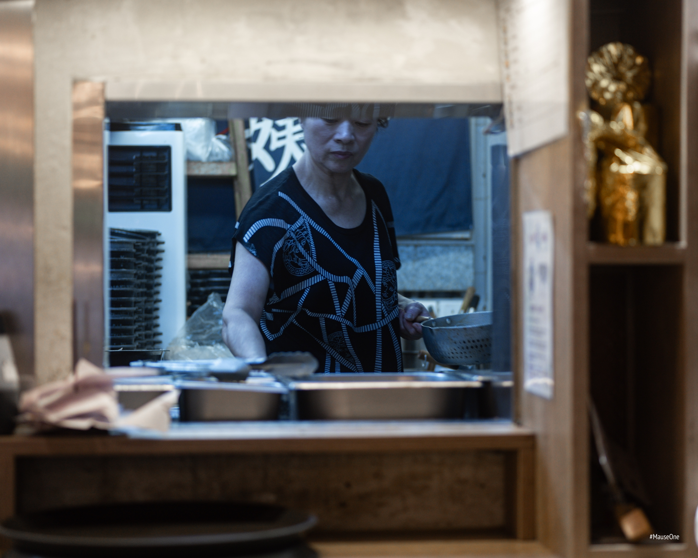
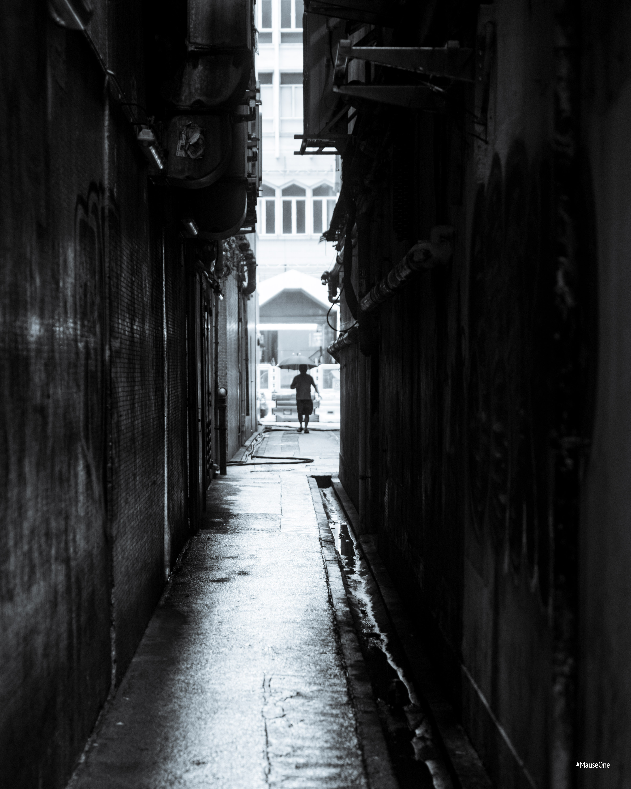
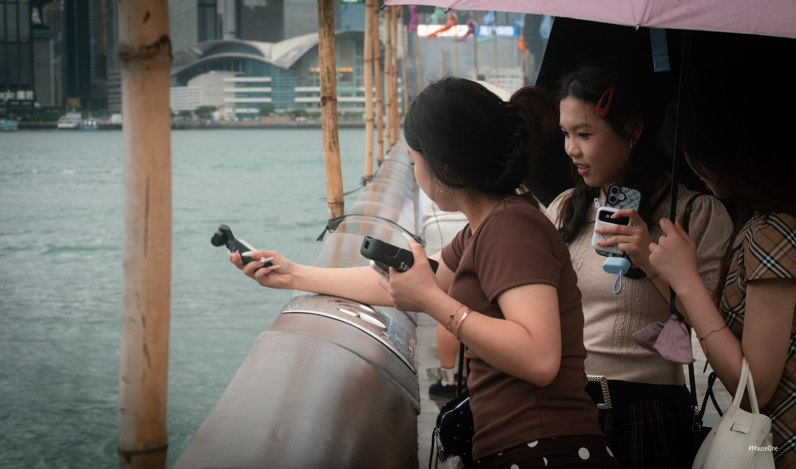
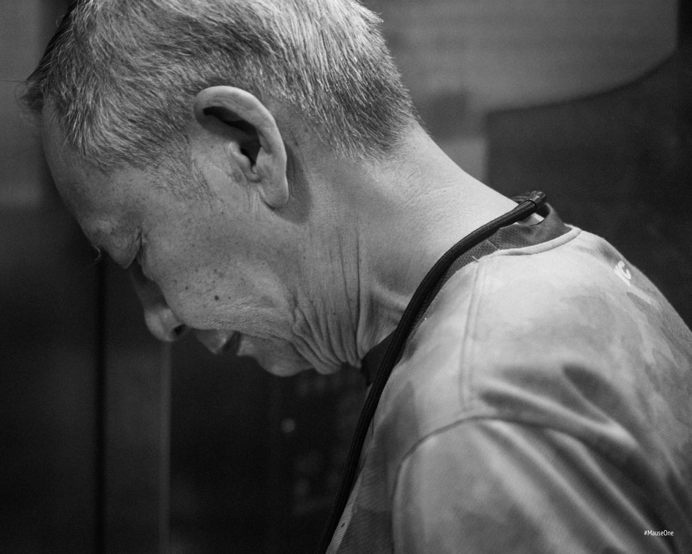
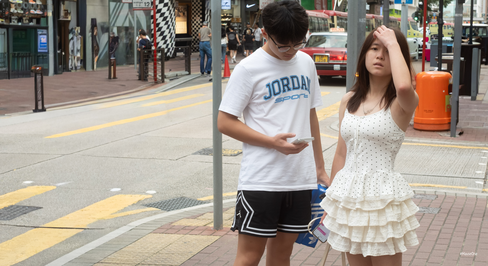
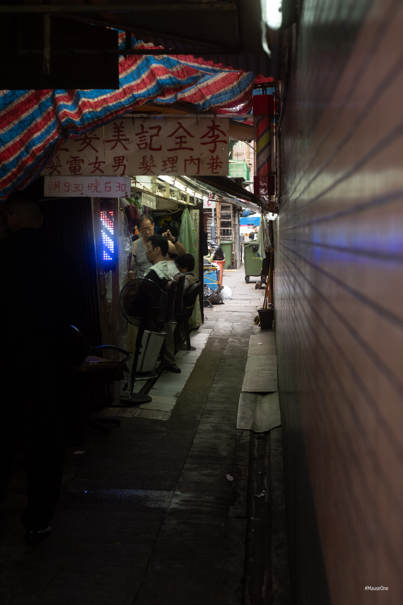
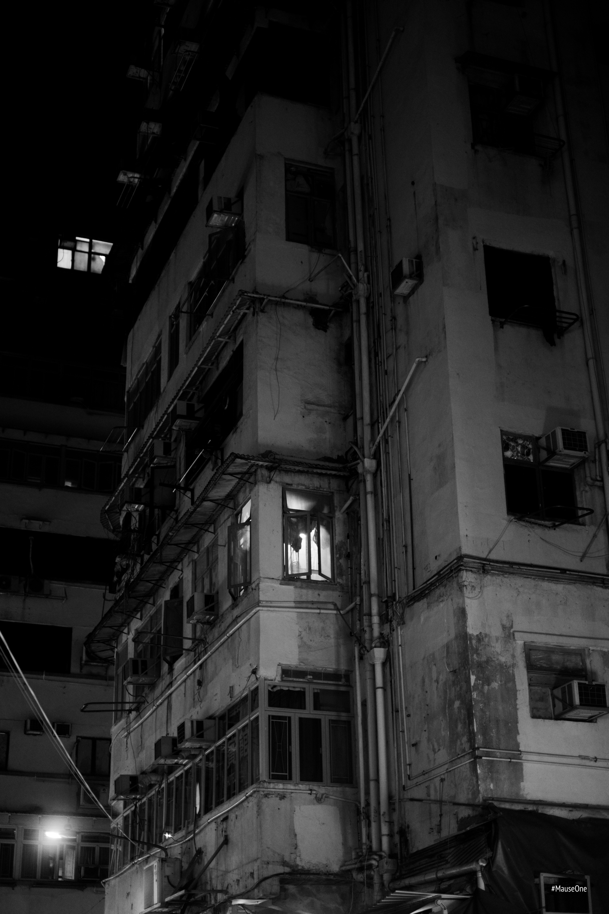

Shooting Hong Kong
I went to Hong Kong not knowing what I was looking for. By the end I wasn't sure I'd found it. But I kept shooting anyway.



Some days I came back with nothing worth keeping. Other days a single frame made the whole walk worthwhile. I stopped trying to force it.




The alleys were quieter than the main streets but busier in a different way. People going about their lives, not performing for anyone. I tried to stay out of the way.




By day four I wasn't sure if I was seeing more or just getting tired. Maybe both. I kept shooting anyway.


I flew home with more questions than answers, which I've come to think is the right outcome. Hong Kong isn't a city you figure out. It's a city that stays with you.

